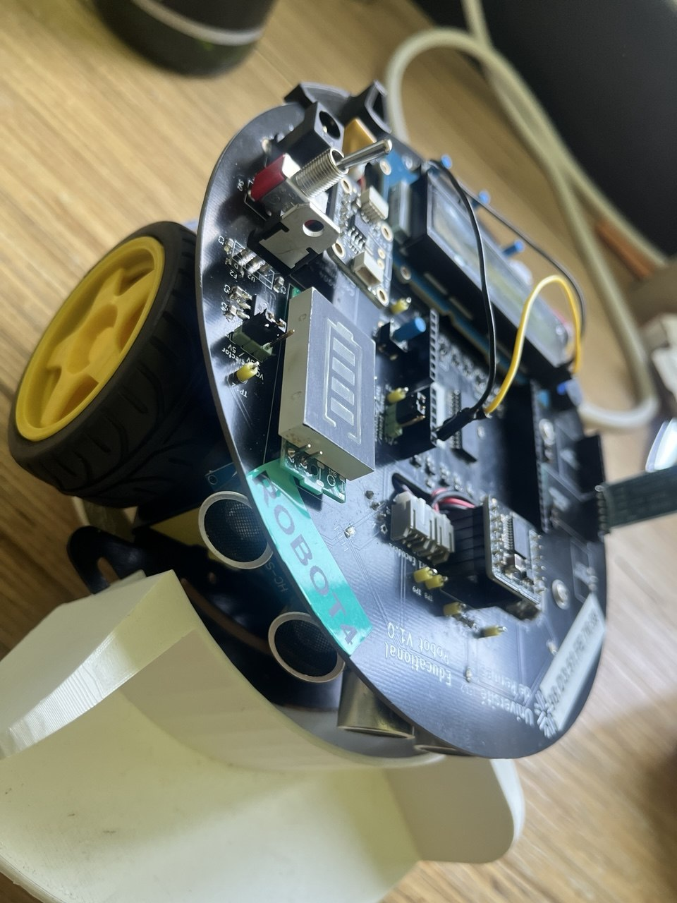
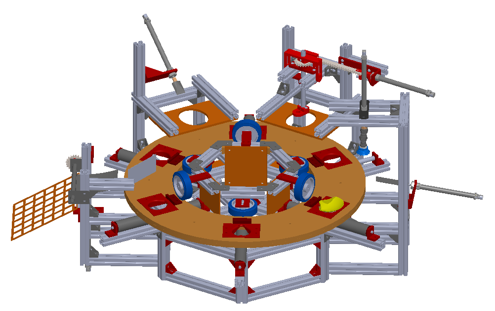
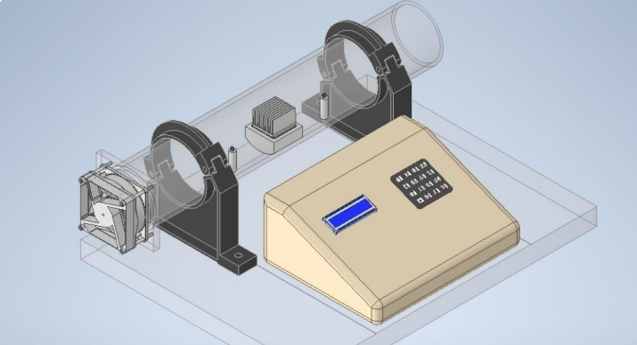

Projets et stages

Diagnostic logiciel et maintenance prédictive
Stage systèmes embarqués - IETR
›
Diagnostic logiciel et maintenance prédictive - IETR
Contexte
J’ai travaillé sur une flotte de robots pédagogiques qui présentaient plusieurs pannes possibles : connectique, moteurs, écran LCD, capteurs et communication série.
Ce que j’ai fait
- Développement d’un firmware de diagnostic sur STM32.
- Organisation des tests avec FreeRTOS.
- Tests bas niveau sur LCD, MCP23017, moteurs, encodeurs et capteurs.
- Création d’une interface Python pour lire les logs et suivre l’état du robot.
Résultat
Le diagnostic est devenu plus clair et plus rapide. Les états du robot sont mieux tracés, ce qui facilite la maintenance.



Dispositif mécatronique R&D
Stage de fin d’étude - MatandSim
›
Dispositif mécatronique R&D - MatandSim
Contexte
Le projet portait sur la conception d’un système automatisé pour l’ouverture mécanique des coquilles Saint-Jacques.
Ce que j’ai fait
- Analyse du besoin et des contraintes mécaniques.
- Recherche de solutions techniques.
- Conception et prototypage du dispositif.
- Tests et amélioration progressive de la solution.
Résultat
Le prototype a permis de valider les premiers choix mécaniques et de faire avancer la solution vers un fonctionnement plus fiable.
 Maquette 5.0 - Tri automatisé
Projet industriel
›
Maquette 5.0 - Tri automatisé
Projet industriel
›
Maquette 5.0 - Tri automatisé
Contexte
Ce projet visait à transformer une maquette de tri de roues de skateboard en système automatisé, supervisé et connecté.
Ce que j’ai fait
- Conception mécanique sous Inventor.
- Fabrication de pièces par impression 3D.
- Programmation de la logique sous TIA Portal.
- Développement d’une interface Node-RED pour la supervision.
Résultat
La maquette permet de trier automatiquement les pièces et de suivre les informations utiles depuis une interface de supervision.
 Robot autonome intelligent
Projet personnel
›
Robot autonome intelligent
Projet personnel
›
Robot autonome intelligent
Contexte
Ce projet personnel me permet de travailler sur un robot capable de percevoir son environnement et d’interagir avec l’utilisateur.
Ce que je développe
- Reconnaissance d’objets avec caméra.
- Base de cartographie de l’environnement.
- Contrôle vocal simple.
- Tests de navigation avec évitement d’obstacles.
Objectif
Construire un projet vitrine autour de la robotique mobile, de la vision embarquée et de l’intégration système.



Asservissement intelligent par IA
Projet Master 2
›
Régulation de vitesse et asservissement thermique par IA
Contexte
Le projet porte sur un système thermo-méca-fluide. L’idée était de piloter à la fois la ventilation et le chauffage, avec une commande plus adaptable qu’un réglage classique.
Ce que j’ai fait
- Modélisation du système sous MATLAB / Simulink.
- Mise en place d’un PID de référence.
- Travail sur l’ajustement des gains avec des réseaux de neurones.
- Test d’un agent DDPG pour la commande continue.
- Comparaison des réponses selon les erreurs, la stabilité et le temps de réponse.
Résultat
Le projet a montré l’intérêt des approches intelligentes pour rendre la commande plus adaptable face aux perturbations.